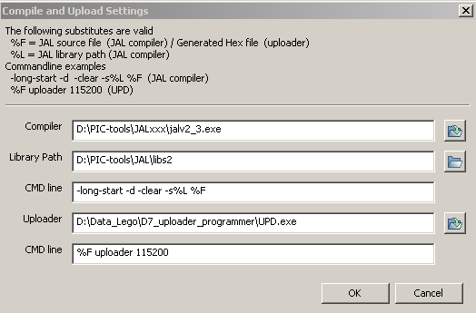

september 2007
JALsPy Introduction
MainMenu
|
File |
Demos |
Edit |
Settings |
Tools |
Windows |
Help |
|
+New / Open ^O +Save ^S +Save As ... ------------- +Print ^P +Print Preview +Page Setup ----------------- -Export (Re-)Import Eagle ---------------- Close |
+dynamic list of all demo programs |
ToDo |
-Scope Settings +Upload Settings +Help Settings |
+Upload-Run |
Scope NetList |
+JALsPy +JAL ------------------- -Check New Version +Send BugReport +About |
New/Open
Starts a filedialog, to open a new or existing JAL file. If a new file is created, the editor is filled from the template
<Program_Directory>\JAL\template_new_jalpy_project.jal
Save
Saves the complete project environment. This is also done automatically, whenever the JAL source is executed / uploaded or when a other project is loaded.
Save As
Saves the current project under a different name and opens the new project. NOTE that if the contents of the project is changed, these changes are not stored in the old project files.
Prints the current document.
Print Preview
Shows a preview of the printed file. This preview is not perfect (text will not always fill the whole page), but the number of lines shown on 1 page is exactly equal to the real print-out.
Page Setup
Demos
All Python files in the directory "D:\data_to_test\JALsPy\JAL" starting with "demo_", are added to this menu.
Upload Settings
JALsPy will double quote all paths, so you're allowed to use spaces in the paths (don't apply the double quotes yourself).

Help Settings
Upload-Run
Starts the compiler and if no errors occurred, uploads the file to the real PIC. Settings for both the compiler and the uploader can be done through the Settings-menu.
TODO: test for no-compiler errors
Help JALsPy / JAL
Opens the path (either local file or URL) in the default browser. The paths can be set through Settings menu.
Check for New Version
Send Bug Report
Start the default email client, where address and subject are already filled in.
In the future also an status report should be attached.
About
Shows version, license, website and credits.